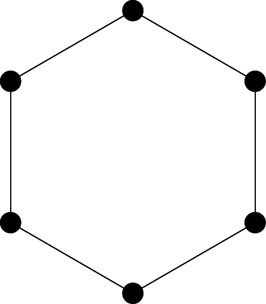

Symmetric Groups
Symmetric groups are groups based on symmetries of certain mathematical objects and structures.
Dihedral groups
An important example of a group comes from symmetries of geometric objects, most notably, polygons.
Lets take a hexagon, and apply an operation s, which reflects it along a line of symmetry. We could also apply an operation r, which rotates the hexagon by \pi / 3 radians. These operations swap the location of the vertices of the hexagon.
If we represent the orignal labelling of the vertices as
\{1,2,3,4,5,6\}
Then we can represent our operations r and s as the permutations
r = \{2,3,4,5,6,1\} \quad s = \{1,6,5,4,3,2\}
For polygons in 2-space, we say that the ‘structure’ of the polygon remains if it can be transferred to 3-space, rotated, and then placed back into 2-space.
Thus our operations r and s are symmetries of the polygon. They can be combined to produce additional symmetries. The set of all possible symmetries on a n-polygon is denoted D_{2n}.
We will prove that D_{2n} is indeed a group later, but for now it can be taken as fact. D_{2n} has 2n symmetries, all of which can be constructed via compositions of our symmetries r and s.
It should be noted that D_{12} is not abelian, which can be clearly be seen with
rs = \{6,5,4,3,2,1\} = sr^5 \quad sr = \{2,1,6,5,4,3\}
Symmetric Groups
Lets define a new symmetric group \Omega.
This gives \Omega, and more precisly S_\Omega some interesting properties.
The identity of S_\Omega is the permutation 1 where 1(a) = a\, \forall a \in \Omega.
Since function composition is associative, the operation is associative.
Every permutation has an inverse since it’s a bijection. Take \sigma\colon \Omega \to \Omega, then \sigma^{-1} \colon \Omega \to \Omega and \sigma \circ \sigma^{-1} = 1
Therefore, (S_\Omega, \circ) is a group and its called the symmetric group on \Omega. Usually we take \Omega as the first n natural numbers.
For any \sigma \in S_n, the cycle decomposition of \sigma^{-1} is obtained by writing the numbers in cycle of the cycle decomposition of \sigma is in reverse order. For example, given
\sigma \colon (1\,2\,3),\quad \sigma^{-1} \colon (3\,2\,1)
When composing in S_n, we read from right to left, for example, if we were in S^4, and given \sigma \colon (1\,2\,3)(4),\quad \tau \colon (1\,2)(3\,4)
We can get \sigma \circ \tau by combining the two. Rather tedious, but we eventually get
\sigma \circ \tau \colon (1\to 3)(2\to 2)(3\to4)(4\to1) = (1\,3\,4)(2)
Note that S_n is non-abelian for all n\geq3. That being said, disjoint cycles will commute. The order of an element \sigma \in S_n is the l.c.m of the lengths in it’s cycle decomposition.
A trasposition is an element of length 2.